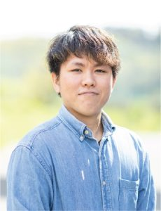
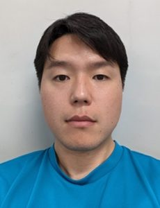

November 25, 2026
Eventイベント
Two Fellows Presented at the 22nd Q-DeCS Workshop — November 25, 2026
九州脱炭素化研究会 第22回ワークショップ（2026年11月25日）— ユニット生2名が研究発表
Takahiro Yamaguchi and Itsuki Oyama presented their doctoral research at the 22nd Workshop of the Decarbonization Society in Kyushu (Q-DeCS), held on Wednesday, 25 November 2026 on the Chikushi Campus and streamed online.
2026年11月25日（水）に九州大学筑紫キャンパスにてハイブリッド開催された「九州脱炭素化研究会（Q-DeCS）第22回ワークショップ」にて、ユニット生の山口貴大さんと小山一輝さんが博士研究の発表を行いました。
The Decarbonization Society in Kyushu (Q-DeCS) held its 22nd workshop on Wednesday, 25 November 2026, from 10:00 in Room 104, Building E, Faculty of Engineering Sciences, on the Kyushu University Chikushi Campus. This time the workshop was combined with a facility tour. After a request-theme lecture by Prof. Hiroshi Idei, Director of the Advanced Fusion Research Center, Research Institute for Applied Mechanics, the doctoral research session followed, in which two fellows of the Q-ENERGY Innovator Unit presented, both from the Department of Interdisciplinary Science and Engineering, Interdisciplinary Graduate School of Engineering Sciences: Takahiro Yamaguchi and Itsuki Oyama.
2026年11月25日（水）10:00より、九州大学筑紫キャンパス 総合理工学研究院 E棟104号室にて、九州脱炭素化研究会（Q-DeCS）第22回ワークショップ・施設見学会が開催されました。応用力学研究所 附属高温プラズマ理工学研究センター長 出射 浩 教授によるリクエストテーマ講演「フュージョンエネルギー・高温プラズマ理工学研究センターでの取り組み」に続く「博士研究紹介」では、Q-ENERGYイノベーターユニットから、総合理工学府 総合理工学専攻の山口 貴大さんと小山 一輝さんの2名が登壇しました。
Both talks were on fusion plasma, so together with the lecture before them the morning formed one programme on fusion. Yamaguchi, supervised by Prof. Hiroshi IDEI, who gave the lecture just before, works on starting up the plasma of a spherical tokamak with electron cyclotron resonance on the QUEST device. Oyama, supervised by Prof. Yusuke KOSUGA of the Research Institute for Applied Mechanics, uses theory and numerical calculations to study how turbulence driven by plasma rotation carries heat in tokamaks. Their abstracts are below.
2名の発表はいずれも核融合プラズマに関するもので、直前の講演と合わせ、午前のプログラムは核融合をテーマとする構成となりました。直前に講演された出射 浩 教授のもとで研究する山口さんは、QUEST装置において、電子サイクロトロン共鳴を用いた球状トカマクのプラズマ立ち上げに取り組んでいます。応用力学研究所の小菅 佑輔 准教授のもとで研究する小山さんは、プラズマ回転が駆動する乱流による熱輸送を、理論モデルと数値計算により調べています。各発表の概要は下記のとおりです。
After the workshop, participants toured the QUEST spherical tokamak at the Advanced Fusion Research Center on the Chikushi Campus, the device on which Yamaguchi carries out his research, and in the afternoon visited hydrogen research facilities on the Ito Campus.
ワークショップ終了後は、筑紫キャンパスの高温プラズマ理工学研究センターにて、山口さんが研究に用いている球状トカマク装置QUESTを見学し、午後には伊都キャンパスの水素関連研究施設を見学しました。
Event Details開催概要
Date日時Wednesday, 25 November 2026, 10:00–11:10 (JST), followed by a facility tour令和8年11月25日（水）10:00〜11:10（その後、施設見学会）
Doctoral session博士研究紹介10:35–11:05 — Chair: Prof. Roman Selyanchyn (Q-PIT)10:35〜11:05 — 座長：Q-PIT 准教授 セリャンチン・ロマン
Venue場所Room 104, Building E, Faculty of Engineering Sciences, Kyushu University Chikushi Campus — hybrid九州大学筑紫キャンパス 総合理工学研究院 E棟104号室 ※ハイブリッド開催
Event名称Decarbonization Society in Kyushu (Q-DeCS), 22nd Workshop and Facility Tour九州脱炭素化研究会 第22回ワークショップ・施設見学会
Presenters from the Unitユニットからの発表者

Takahiro Yamaguchi山口 貴大
Heating and plasma current start-up using electron cyclotron resonance in spherical tokamaks
球状トカマクでの電子サイクロトロン共鳴を用いた加熱とプラズマ電流立ち上げ
As expectations for fusion power grow on the way to a decarbonized society, the spherical tokamak (ST) is attracting attention as an approach that aims at early realization. An ST can operate at a higher beta value than a conventional tokamak (beta, the ratio of plasma pressure to the magnetic pressure of the coils, is an indicator of economic performance). In addition, a compact device design, built with technologies developed for projects such as ITER, is expected to bring an economically attractive fusion reactor at an early stage. Because the device is compact, however, there is not enough space for the central solenoid (CS) coil that is normally used to form the tokamak configuration. One way to start up the plasma without a CS coil is heating and current drive using electron cyclotron resonance. The QUEST device at Kyushu University has used this approach to reach what was, at the time, the world’s highest plasma current, together with a relatively high electron temperature.
脱炭素社会の実現に向けて核融合発電への期待が高まる中、早期実現を目指す方式として、球状トカマク装置（ST）が注目される。ST は従来のトカマクより高いベータ値（経済性の指標となる、プラズマ圧力とコイルの磁場圧力の比）での運転が可能である。加えて、コンパクトな装置設計とその建設に ITER などで培われた技術を活用することで、経済性の優れた核融合炉の早期実現が期待される。一方で、コンパクトさ故に、トカマク配位形成に通常用いられる中心ソレノイド（CS）コイルの設置に必要なスペースを十分に確保できないなどの課題がある。CS コイルを用いないプラズマ立ち上げ手法として電子サイクロトロン共鳴を用いた加熱・電流駆動がある。九州大学 QUEST 実験装置では、これまで世界最高値となるプラズマ電流（当時）と比較的高い電子温度を達成している。

Itsuki Oyama小山 一輝
Heat transport by rotation-shear-driven modes in tokamaks
トカマクにおける回転シア駆動モードの熱輸送
Plasma rotation plays an important role in making fusion reactors practical. The goal of a fusion reactor is to reach a self-sustaining burning state driven by fusion reactions, keep it going, and extract energy from it. Transport by turbulence in the plasma carries heat out, lowers the temperature and stands in the way of this goal. Plasma rotation helps to suppress this transport by tearing turbulent structures apart and breaking them into smaller pieces. In recent years, however, it has become clear that rotation itself can also create turbulence, and turbulence caused by rotation may limit these gains in performance.
My research focuses on this rotation-driven turbulence. Using theoretical models and numerical calculations, I aim to clarify the structure of this turbulence and, in particular, its transport properties.
If these properties can be organized, they will help us understand how much rotation is appropriate when the plasma is heated stably while turbulence is kept down. The talk also explains how these findings can be used in actual fusion development.
核融合炉の実用化に向けて，プラズマの回転が重要な役割を果たします．核融合炉では，核融合反応による自律的な燃焼状態を実現し，それを持続してエネルギーを取り出すことが目標です．その際，プラズマ中の乱流による輸送は，熱を排出してしまうことで温度を下げ，実現の妨げになってしまいます．プラズマ回転は，こうした乱流構造を引き裂き，細分化することで，輸送を抑制することに寄与します．しかし近年，この回転自体も乱流を作り出すことが分かってきました．回転に起因する乱流は，こうした性能向上を制限する可能性があります．
私の研究では，この回転による乱流に注目しています．この乱流が持つ構造や，特に輸送に関する特徴を，理論モデルや数値計算を用いて明らかにしようとしています．
こうした特徴を整理することができれば，プラズマの運転における，乱流を抑えつつ安定にプラズマを加熱する際の，適切な回転具合を理解することの一助になると考えています．発表では，こうした知見が実際の核融合開発にどのように活用されていくのか，ということも含めご紹介します．